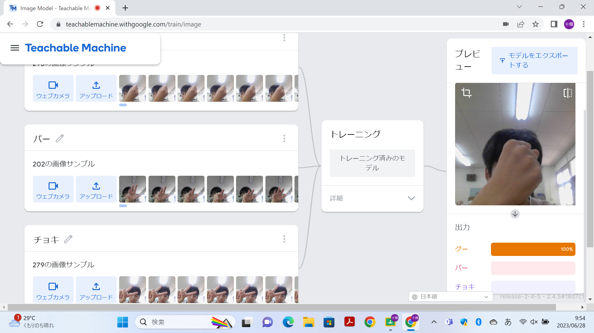
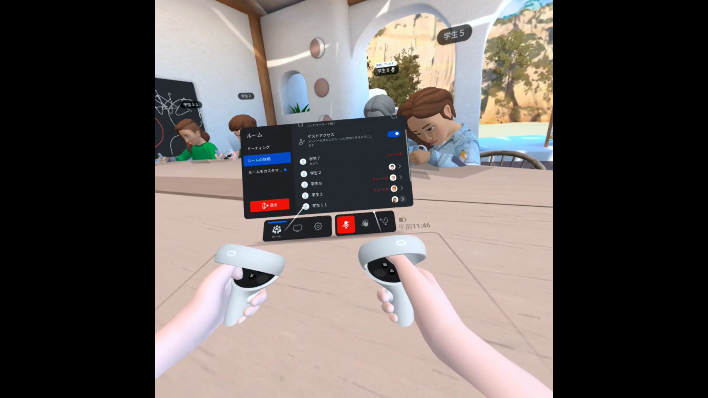

第2週目
2-1 １週目のレポートをHTMLで作る
１週目のレポート
1.内容
Scratchというサイトを使って簡単なプログラミングのやり方や、線を引いて図形を作る方法や簡単なゲームの作り方を学んだ。また、githubというウェブサイトを使って自分のウェブサイトを作り写真をアップロードした。
2.感想
プログラミングについて全く知らなかったけど、ゲームを作ったり線を引いて図形を作ることができてとても楽しかった。自分のウェブサイトを作れたときは、自分が思っているよりも簡単に作ることができたのでとても驚いた。
2-2 機械学習体験

1.内容
じゃんけんのグー、チョキ、パーの手の形をパソコンで200枚くらい撮影した。自分が手をカメラに移すと移したての形がグー、チョキ、パーのどれなのかを判別させた。
2.感想
写真からどの手の形が一番近いかを判断できていた。たまに違う形だったりしたが撮った写真の量を増やせば改善することができた。
2-3 VR（バーチャルリアリティー：Virtual Reality）会議室の体験

1.内容
VRゴーグルを使って、VR会議室の体験をした。VR会議室で
2.感想
最初はピントが合ってなくてぼやけて見えていたが、時間をおくと見えた。初めて使った感想は、あてはまる言葉が思いつかないくらいすごかった。現実と同じような感じで、特に視点を動かしたら画面もその通りに動くプログラムについて興味を持った。